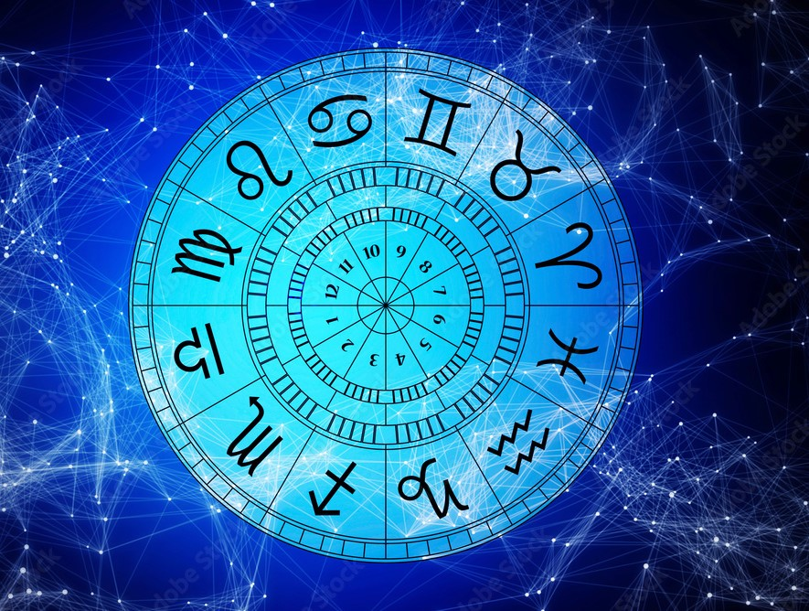

AstroMed is a unique AI-driven platform that blends the wisdom of astrology with the power of machine learning. It predicts whether an individual has the potential to become a doctor based on their astrological profile. Users input details like zodiac sign, nakshatra, sun sign, and moon sign to receive personalized insights. The system uses trained ML models on astrological datasets to ensure accurate and meaningful predictions. The platform is designed to be intuitive, engaging, and visually aligned with a cosmic aesthetic. AstroMed brings ancient Vedic astrology into the modern digital age through advanced AI techniques. The goal is to empower users with a deeper understanding of their destiny and professional path. Empower your future with AstroMed — where science meets the stars. ✨🌠
Enter AstroMedAt AstroMed, we believe that the stars hold hidden clues about your future. Our platform combines the ancient wisdom of astrology with modern AI techniques. We specialize in predicting your potential to become a doctor based on celestial data. By analyzing your zodiac sign, nakshatra, sun, and moon positions, we offer deep career insights. Our mission is to guide individuals using a scientific yet spiritual approach. AstroMed is built by a passionate team of developers, astrologers, and AI experts. We strive to create a seamless, user-friendly experience powered by smart technology. With stunning visuals and accurate predictions, your journey feels magical and informative. We value trust, intuition, and innovation in everything we deliver. Let AstroMed be your guiding light on the path to your true calling. 🌌✨
Astrology is a predictive science with its own sets of methods, claims and findings that have forever inspired and allowed people with insights into different aspects of their life. Astrology, with its wows and hows, is contentful and approving enough to make people a believer of the same. And thankfully, it continues to do so despite the world shifting bases from what they believe in and what they don’t. If one has to go into the technicalities of astrology, it is the study of different cosmic objects, which are usually stars and planets, that have an effect on the lives of the people. You must be aware that there are as many as 8 planets in the solar system. However, If I ask an online astrologer near me about the planets in astrology, they will tell me that there are as many as 9 planets in astrology also called Navagrahas. And surprisingly, the planet Earth, in astrology, is not counted among the nine planets. The 9 planets in astrology are Sun (Surya), Moon (Chandra), Mars (Mangala), Mercury (Budha), Jupiter (Brihaspati), Venus (Shukra), Saturn (Shani), Rahu (north node of the moon), and Ketu (south node of the moon). Among these planets, some planets are called friendly planets, meaning the presence of them brings positivity to your life. And then, there are also planets that have a negative influence on humans. The latter would be planets like Rahu and Ketu. Their presence in one’s Kundli is said to bring pain and misery. However, there is another aspect one needs to be aware of. It’s the fact that the presence of Ketu in one’s horoscope is not always bad and similarly, the presence of Jupiter in one’s Kundli might not be the best every time. It all depends on which houses these planets are sitting in. If you ever had the opportunity to talk to an astrologer online, then s/he must have told you about houses in astrology and the movements of planets in the same. There are as many as 12 houses in Kundli. And all of these houses represent one thing or the other
Email: support@astromed.com